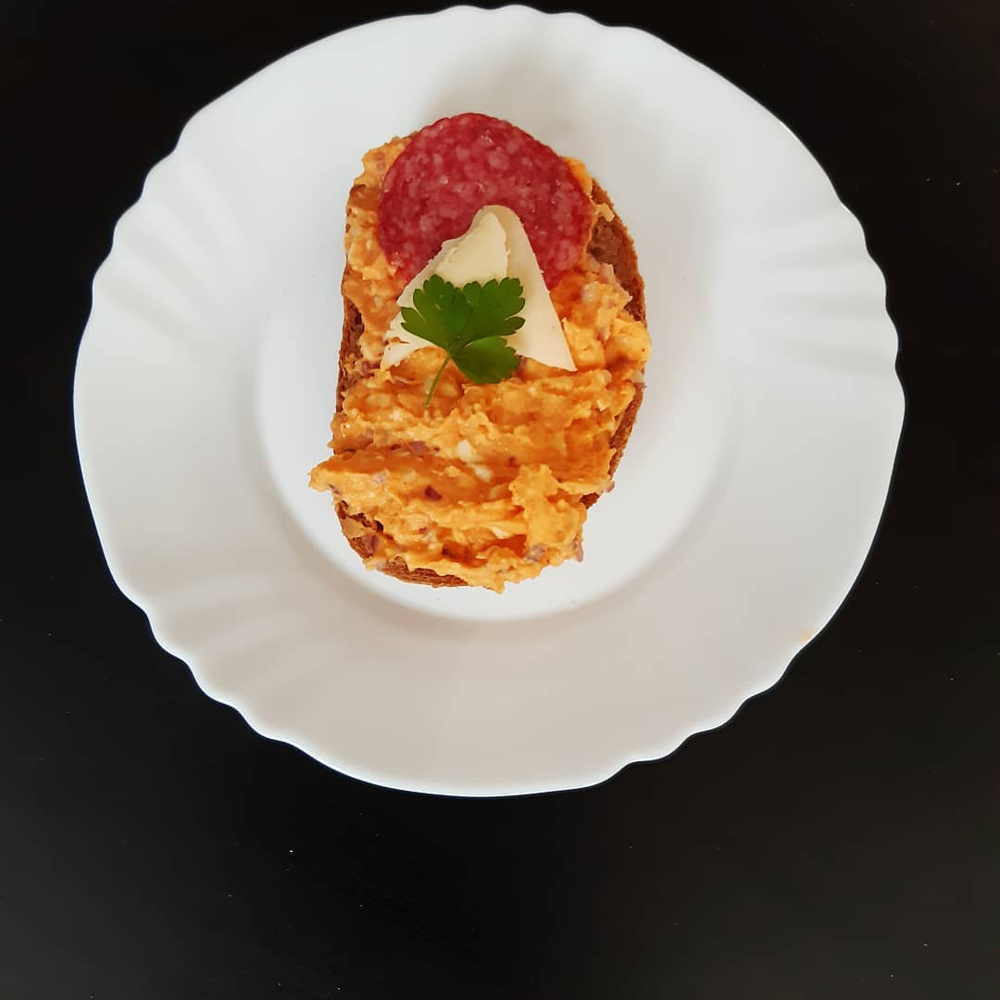

Obatzda – bavorská syrová nátierka
---------------------------------------------------------------------------
Ingrediencie
1 ks cibuľa
120 g Camembert
50 g žervé, nátierku z čerstvého syra
30 g zmäknuté maslo
½ čl mletá sladká červená paprika
¼ čl mletá rasca
soľ
pažítka
Postup
Cibuľu ošúpeme a nakrájame na malé kocky. Camembert nakrájame na menšie kusy, pridáme maslo, žervé a pritlačíme vidličkou. Miešame az dostaneme kremovú konzistenciu. Dochutíme soľou, cibuľkou, pažítkou a necháme vychladnúť.
#spread#breakfast#cheese#moldycheese#cheesewithwhiteskin#vegetarian#meatles#tasty#Cheese#recipe#natierka#plesnivysyr#obetza#syrovanatierka#camembert#